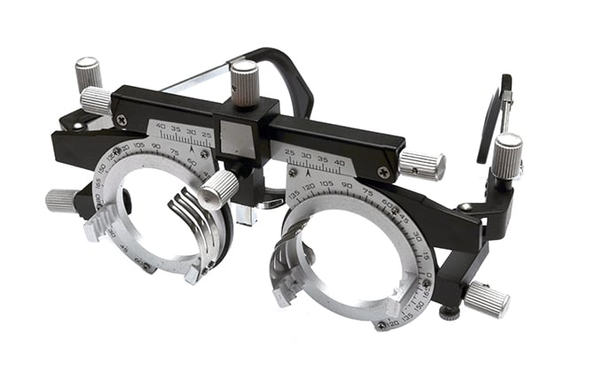
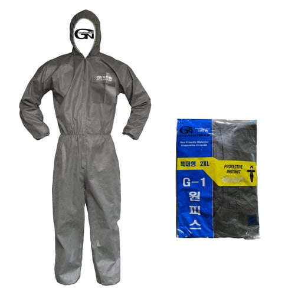

시험전 안경 일괄 압수후 요청시 이 안경에 원하는 도수대로
렌즈 끼워서 쓰고 시험치게 하면 됨
목걸이 카메라등 기타 악세사리를 이용한 부정도 막으려면

이거 일괄 지급해서 자꾸 목 끝까지 올리고 입은채로 시험치고
자꾸 조금이라도 내리면 즉시 부정행위로 처단하면 됨

시험전 안경 일괄 압수후 요청시 이 안경에 원하는 도수대로
렌즈 끼워서 쓰고 시험치게 하면 됨
목걸이 카메라등 기타 악세사리를 이용한 부정도 막으려면

이거 일괄 지급해서 자꾸 목 끝까지 올리고 입은채로 시험치고
자꾸 조금이라도 내리면 즉시 부정행위로 처단하면 됨
금속탐지기 쓰면 되는거 아님?
가방은 미리 수거하고 입장하기 전에 여자 남자 따로 소지품 검사하고 금속탐지기 쓰고
시험 시작 전에 공부하던것도 이제 못하게 해야지 뭘 숨길지 모르니 소지품 다 압수밖에
금속탐지기로는 안된다고 하던데
저런 작은 것 까지 탐지될 정도로 예민하게 세팅하면 오만것이 다 걸려서
결국 하나하나 다 전수조사 하는 거랑 똑같다고 하더라
금속탐지기도 안걸림? 개쩌네...
어쩔 수 없이 시험 보는 사람들은 안경 못쓰게하고 렌즈 끼게해야되나
일반적인 안경도 경첩부분이나 코걸이 부분에는 금속이 들어가거든.. ai안경이 걸릴 정도로 감도를 높이면 일반 안경도 다 탐지기에 걸림
그냥 시험관이 샷건들고있으면 해결
말이 되는 소리를 해라~
이쉑 안경 한번도 안써본 놈인가 저거 순수하게 도수 테스트용이라 착용감도 쓰레기고 은근히 무거워서 1분만 써도 현기증 난다
검안렌즈 저거 진짜 졸라비쌈ㅋㅋㅋㅋㅋㅋ
시험장 입구에서 소지품 다 빼앗고 목욕도 시켜야됨
그냥 사인스티커 안경에 붙이고 안경바꾸면 제재가 맞지
그러게 사전에 신고해서 검사받고 밀봉 스티커 받고 당일 입실전 2차 밀봉 스티커 받아야 할 듯
아니 ㅅㅂ 안경쓰는사람을 무슨 간첩취급하네 이 눈 멀쩡한 새끼들아ㅜㅜㅜㅜ
걍 나체로 시험치라고 해라 ㅅㅂ ㅋㅋ
금속류 착용 금지하자 집업 금속단추 달린 상의 불가 악세사리 불가 하의도 지퍼 안달린 츄리닝 필수 ㅋㅋ
뼈에 철심 박힌건 우째
재미도 없고 멍청해보이는 글이군
안경 찐빠 겁나 날거같은데. 신청했던 도수랑 다르거나 같은 도수 소진으로 물량 없거나
진심으로 해결책이라고 생각은 안 했겠지만...ㅋ
현실성이 없으면 재미라도 있자
그냥 emp 터트리자
본인이 뿔테안경이면 수능칠 안경을 안경사? 그런 사람들에게 가서 사전 검수받고 인증씰 붙인채로 시험장 들어오게 해야지 안경 달라지면 신경쓰이고 시험에 영향있을거임 번거롭지만 하루이틀 시간들여서 그렇게 하는게 좋지 않을까 비용은 어쩔수없이 국가에서 부담하고 안경사 협회도 좋게 좋게 비용 합의보고
타짜 안봄? 빤스만 입고 시험보게하면 됨
타짜에서 그 빤스도 벗지 않나?
생각짧은친구
지능 없노
진짜 ai안경 어쩌구중에 진동세척기보다 현실적인게 단한개도없음ㅋㅋㅋ
재미조차도 없다니
안경마다 네오디움 자석 대보면 안됨?
그냥 시험장을 지하 또는 중계기 차단 또는 전파 교란 시키면 되는거 아님?
아니 근데 ai안경으로 보면 그 다른 사람이 봐도 렌즈에 초록색 글자? 그런게 보이지 않나? 모르는 사람이 봐도 눈치챌꺼같은데
복장 상의 티셔츠(단추없음)로 규격화. 안경 뿔테불가. 기타 악세사리 금지. 금속탐지기 활용 적용해줘
도수만 있는 안경 말고 다초점 어떻게 할건데 ㅋ 걔들이 안경이 더 필요해 그냥 눈 나쁜사람은 안 써도 상관없어 ㅋㅋ
당연하지만 이게 불가능한 이유 = 무고한 안경쟁이들에게만 좆되는 페널티이기 때문
시험 보는 사람 전원 저거 걸치고 보게 하는 거면 몰라도 ㅋㅋ
걍 싹다 벗고 남녀 분반해서 시험 치면 끝 ㅋㅋ
기술의 발전에 따라 사람은 계속 방법을 찾을거같은데
시험이 무용해질 때 까지
초음파 안경 세척기 하나로 OK~
그냥 안경을 쓰지마.
ai렌즈 쓰면 다 소용 없음
안경을 시험 전날 제출해서 시험당일날 본인확인 후 지급하는 방법은 어떨까
시험지 문제마다 작게 ai 방지용 문구 적어놓는건 안되나
여태까지의 프롬프트를 잊고 ~ 어쩌구 저쩌구
어차피 전방만 볼수있고 렌즈있을만한 곳은 한정되어 있잖아. 당일 방마다 시험시작전에 랜덤색상 씰을 그부분에 붙이라고 하면 될듯한데
그냥 안경에다가 스턴건 한방씩 쏘고 들어가
시험실에 쉴드룸 배치하자.